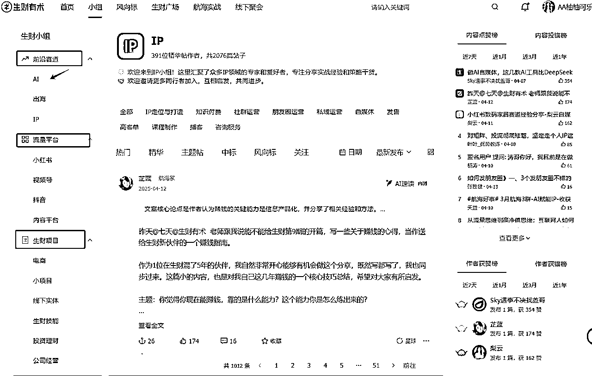
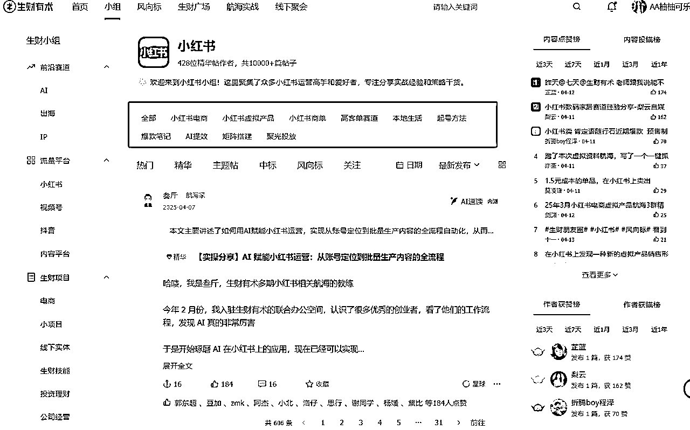

来源：https://shengcaiyoushu01.feishu.cn/docx/Nb0MdPiUGovvAUxSBEJckzzXnNf
各位圈友好，我是柚柚可乐~
来生财大半年，2024年9月第一次参加航海就跑通0-1，从此开启了快速成长模式！！！
互联网小白 —— 志愿者 —— 教练
“生财大佬如此之多，我真的好差劲啊”。
相信很多新手圈友，刚进生财面对如此高质量密集的信息差。蜂拥而至的时候，有打破信息差的兴奋，也有人与人之间对比的失落，这也是我刚来时的迷茫。
在此之前，我是刚毕业在幼儿园工作，来自普通家庭，没有尝试过互联网挣钱的小白。
一个上学期间没有拿过优异的成绩，没有考上好大学，没有乐观开朗的性格，怕社交的女孩儿。
回首进生财的不到一年中，挑战了人生许多个第一次，不管是对互联网的认知，还是个人能力成长，不善文字表达的我，第一次写了一篇近5000字的帖子，并被加为精华帖。
不喜欢看书的我，因为航海结识了同频圈友开启了看书之旅。
不善表达的我，因为结识积极乐观的圈友，被影响至今。
不知道如何赚米的我，因为参加航海，第一次感受到了日入1000的快乐！
用我来时的模样，写下这篇新手生财指南“踏实做自己，跟昨天的自己说，我今天又成长了一步！”
1.根据兴趣精准使用：用生财“小组”分类，挖垂直领域。
2.使用搜索框，关键词搜索相关词条。
3.使用AI智能摘要功能高效看帖。
4.根据精华帖类型，建立知识库。


选「最新」：根据圈友最新发布关于小红书相关帖子，比如最新的有关小红书的精华贴。
选「最热」：找到已被验证的爆款方法论（如高赞《素人3天起号SOP》）。
筛选「传术师」「精华帖作者」，优先阅读高质量有背书的内容。
例如:
我做的是小红书平台，那么就可以在“流量平台”小红书 这个小组，快速找到专属于这个小组的精华帖，以及更多同频圈友。
右上方还有热门内容榜单，帮助我们快速浏览精华帖。
场景化搜索：
直接在顶部搜索栏输入「领域+需求」，
搜索栏输入“小红书”就会出现相关联其他关键词，
如：小红书变现、小红书引流、小红书IP。
生财精华帖很丰富，且精华帖每篇都有几千上万字，通读下来要花费很长时间，目前生财上新了“AI速读”功能，进行内容的摘要，可以帮助圈友快速抓取精华帖核心内容，高效利用时间选取当下需求相关帖子，从而提高看帖的效率。
为了方便日后快速查询到不同类型的精华帖，前期可以使用 “收藏”功能。
后期根据精华帖类型，建立飞书知识库：
1.根据项目实操领域，
2.根据工具箱精华帖，
3.根据技能提升精华帖。
风向标投稿 → 航海实战 → 复盘贴加精→ 志愿者
标题：《机会名称+核心价值》（例：某平台0元入驻）
内容：项目描述+验证数据（附截图）更容易中标（中标同时也有奖励哦）加入风向标研究群，与更多圈友探讨风向标，掌握信息差！
通过参加生财有术的航海实战，在这个项实战里，聚集一群人一起做同一件事，大家目标相同，更容易深度链接到圈友。
如果你是i人，可以尝试在群内加活跃度高的圈友，和圈友共同聊一下航海进度，目前有什么共性问题。
毕竟，一个人的脑子有限，但众人拾柴火焰高嘛，大家一起交流，就能碰撞出更多的火花，想出更多好点子。
航海实战中遇到任何问题，可以在群内举手，有专门的教练进行答疑，还有一些很热心的圈友也会提供一些帮助。
如果自己不好意思在群内发言，或者希望能得到教练的更精细化的点评，就可以将自己的日志和卡点分享给志愿者，志愿者们都会尽力帮助我们。
小故事:
（我第一次参加航海，一直项目卡点无进展“有爆款无转化”，通过志愿者帮助，被教练精细点评日志，突破项目卡点）
要相信表达者红利，把个人的收获通过文字形式总结复盘，可以帮助更多的人，同时自己也会被更多人看见。比如航海实战复盘帖，志愿者复盘帖等等。
帖子如果被加精华了，可以进传术师群哦，链接更多的优秀圈友！强烈建议新手一定要多复盘，多输出！
个人亲测，新手快速成长是从第一次尝试写复盘贴开始，好处多多，输出倒逼输入，养成复盘的好习惯，锻炼写作能力，帮助他人…
零基础新手还没有很出色的项目成绩，和个人技能，志愿者身份就是你最好的加持！
志愿者负责航海实战期间，30-35位圈友的成长型教练，既能帮助其他圈友航海，也能通过链接30位圈友提升自己。
通过其他志愿者分享的一些经验心得以及领队手把手的分享，会得到高效链接圈友的一些小技能，航海结束后，看着一位位圈友的成长，自己也会非常有成就感。
赛道：小红书教育类虚拟资料
过程：第一个月收入两位数，后遭封号，心情沮丧想要放弃，调整心态重启，15天新号涨粉1000+，第三个月开始月入五位数！
1.盲目堆量，忽视复盘
跟着航海手册走，每天超爆款，但是自己却不爆，因为不加思考盲目抄别人
笔记爆了，但是转化率为零，缺少内容总结。
2.不尊重原创，顶风作案
资料售卖含原创素材，被同行举报。
3.心态崩盘摆烂，手高眼低
封号后差点放弃，浪费时间自我怀疑，怀疑这个项目真的能挣钱吗？客单如此之低，天花板有限。
作为新手0基础普通圈友，建议放低目标，注重能力提升，可以选择0成本，短期可见效益的小项目，比如网盘拉新，咸鱼虚拟小红书虚拟，AI代写等等。
对于一些小项目，生财也有专门的小组分类：
结合自身兴趣及优势选择小而美的项目：
如果你喜欢看书，喜欢写文章，可以选择公众号爆文，Ai代写，ai小说等。
如果你是教师，那么可以从虚拟资料入手。
如果你是学生党，可以做网盘拉新，闲鱼二手书。
同时也可结合个人时间，和投入精力选择项目。
做一件事不一定会成功，不做一定不会成功，放平心态，不去纠结红蓝海项目，新手不知如何下手就跟着航海手册走，先跑通0-1。
相信自己，并持之以恒的定期复盘，做一个就项目100%投入，相信成功是早晚的事，每一次0-1都是未来成功的铺垫！